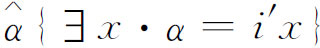
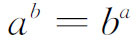
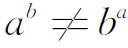
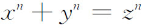

6．直观派
一群被称为直观主义也有译作“直觉主义”者（intuitionist）的数学家，对数学采取了根本不同的研究途径。与逻辑主义的情况一样，直观主义哲学是在19世纪末创立的，当时的主要活动是数系和几何的严密化。悖论的发现刺激了它的进一步发展。
第一个直观主义者是克罗内克，他在19世纪70年代和80年代中发表了他的看法。克罗内克认为，魏尔斯特拉斯的严密性含有不能接受的概念，而康托尔关于超限数和集合论的工作不是数学而是神秘主义。克罗内克情愿接受整数，因为它们在直观上是清楚的。它们“是神造的”，其他的东西都是人造的，是可疑的。他在1887年的文章《论数的概念》（Über den Zahlbegriff）(13)中，表明了某种类型的数，如分数，可以用整数定义出来。这样定义的分数被认为是一种方便的写法。他想砍掉无理数和连续函数的理论。他的理想是，分析中的每个定理都应当可以解释为，它们给出只限于整数中间的关系。
克罗内克对数学很多部分的另一个反对意见是，它们没有给出构造方法或判断准则，可用有限步骤去确定它们所研究的对象。定义应当包括由有限步骤所定义的对象的计算方法，而存在性的证明对于要确立其存在的那个量，应当许可计算到任意的精确度。代数学家愿意说，一个多项式f（x）若有有理因子，就是可约的；在相反的情形，就是不可约的。在他的纪念文章《代数量的一种算术理论之基础》（Grundzüge einer arithmetischen Theorie der algebraischen Grössen）(14)中，克罗内克说道：“可约的定义是没有可靠的基础的，除非给定了一个方法，用它可以断定一个函数是否可约的。”
还有，虽然无理数的几种理论都对两个实数a和b相等，或a＞b，或b＞a给出了定义，但它们都未给出在已知情况中去确定哪一个成立的判别法。因此，克罗内克反对这样的定义，认为它们仅仅是表面上的定义。他对无理数的整个理论都不满意。林德曼证明了π是超越数，有一天他对林德曼说：“你对于π的美丽的研讨有什么用处？无理数是不存在的，为什么要研究这种问题呢？”
除去批评对于仅仅确立了存在的那些量还缺少确定它们的构造程序以外，克罗内克本人很少去开展直观主义哲学。他曾尝试重建代数，但未致力于重造分析。克罗内克在算术和代数上做了美好的工作，但并不符合他自己的要求，正如庞加莱所说的(15)：他一时忘记了他自己的哲学。
在克罗内克那个时代，没有人支持他的哲学，将近25年中没有人探索他的思想。可是，在发现了悖论以后，直观主义却复活了，并且成了广泛的认真的运动。第二个强有力的倡导者是庞加莱。已经提到过，他因为集合论产生了悖论就反对集合论。他也不承认逻辑派挽救数学的计划。他嘲笑把数学奠基在逻辑上的企图，理由是数学将化为无限的同义反复。他还挖苦（在他看来是）高度人为的数的推导。例如《原理》中把1定义为

，庞加莱嘲讽地说，这对于从未听说过数目1的人来说，是一个令人赞叹的定义。庞加莱在他的《科学与方法》（Science and Method，见《科学的基础》，第480页）中宣称：
逻辑主义必须加以修正，而人们一点也不知道还有什么东西可以保留下来。无须多说，这指的是康托尔主义和逻辑主义；真正的数学，总有它实用的目的，它会按照它自己的原则不断地发展，而不理会外面狂烈的风暴，并且它将一步一步地去追寻它惯常的胜利，这是一定的，并且永远不会停止。
庞加莱反对那种不能用有限个词来定义的概念。例如，按选择公理选出来的一个集合，如果是从超限数个集合的每一个都需要作选取的话，那它就不是真正被定义了的。他还争辩说，算术是不能由公理基础来判明它是正确的。我们的直观是先于这样一个结构的。尤其是数学归纳法，它是一种基本的直观，不只是公理系统中的一条有用的公理。与克罗内克一样，他坚持所有的定义和证明都必须是构造性的。
他同意罗素的这种看法，即矛盾的来源是在一个东西的定义，这个东西是一些堆或集合，其中就包含所要定义的那个东西。如所有的集合所组成的集合A，就包括A。但A是不能定义的，除非A的每个元素都已有了定义；而若A也是一个元素，则定义就成为循环的了。这种说不清的定义的另一个例子，是把定义在一个闭区间上的连续函数的极大值（maximum value），定义为函数在这个区间上的最大值（greatest value）。这样的定义在分析中是常见的，尤其是在集合论中。
在波莱尔、贝尔、阿达马和勒贝格中间往来的信件中(16)，展开并讨论了对现时数学的逻辑状况的进一步批评。波莱尔支持庞加莱关于整数不能以公理为基础的论断。他也批评选择公理，因为它需要作不可数的无穷个选择，这对于直观讲来是不可理解的。阿达马和勒贝格走得更远，宣称即使是可数无穷个相继的选择，也并不更直观一些，因为它需要无穷个运算，而这不可能被认为是确实可行的。勒贝格认为困难全在于，当人们说到某个数学对象存在的时候，要知道它的含义是什么。在选择公理的情形，他争论说，如果人们仅仅是“设想”了一个选择的方法，那么在推理的过程中这个选择法就不会改变吗？即使是在一个集合中选出一个东西来，勒贝格坚持说，也有同样的困难。因为我们必须知道这个东西是“存在”的；这就是说，我们必须把选取的东西明确地指出来。这样，勒贝格就驳斥了康托尔关于超越数存在的证明。阿达马指出，勒贝格的反对意见将导致否定所有实数组成的集合的存在，而波莱尔也得出完全相同的结论。
上述直观主义者所持的反对意见，都是零散的、片断的。近代直观主义的系统的创立者是布劳威尔。和克罗内克一样，他的许多数学工作，尤其是在拓扑方面，并不符合他的哲学，但是毫无疑问，他的见解是重要的。布劳威尔从他的博士论文《论数学的基础》（On the Foundations of Mathematics，1907）起，就开始建立直观的哲学。自从1918年以后，他就在各种期刊上写文章来申张论述他的看法，包括1925年和1926年的数学年刊（Mathematische Annalen）。
布劳威尔的直观主义观点起源于一种广泛的哲学。布劳威尔认为，基本的直观是按时间顺序出现的感觉。“当时间进程所造成的二重性（twoness）的本体（subject），从所有的特殊现象中抽象出来的时候，就产生了数学。所有这些二重性的共同内容所留下来的空洞形式［n到n＋1的关系］就变成数学的原始直观，并且由无限反复而造成新的数学对象。”例如，由无限反复，头脑就形成了一个接一个的自然数的概念。康德、哈密顿［在他的《作为时间科学的代数》（Algebraasa Science of Time）中］及哲学家叔本华都曾经主张整数导源于时间的直观这种思想。
布劳威尔把数学思维理解为一种构造性的程序，它建造自己的世界，与我们经验的世界无关，有点像是自由设计，只受到应以基本数学直观为基础的限制。这个基本直观的概念，不能设想为像公设理论中那种不定义的概念，而应设想为某种东西，用它就可以对于出现在各种数学系统中的不定义的概念，作直观上的理解，只要它们在数学思维中是确实有用的。
布劳威尔坚持认为：“数学的基础只可能建立在这个构造性的程序上，它必须细心地注意有哪些论点是直观所容许的，哪些不是。”数学概念嵌进人们的头脑是先于语言、逻辑和经验的。决定概念的正确性和可接受性的，是直观而不是经验和逻辑。当然必须记住，这些关于经验的作用的言论，是在哲学的意义上，而不是在历史的意义上来讲的。
对于布劳威尔，数学的对象是从理智的构造得来的，其中基本的数目1，2，3，…提供了这种构造的原型。从n到n＋1这一步骤的空洞形式的无限反复的可能性，导致无穷集合。但是，布劳威尔的无穷是亚里士多德的潜无穷；而近代数学，如康托尔所奠定的，则广泛地运用实无穷的集合，它们的元素是“一下子”就都出现了。
属于直观派（intuitionist school）的外尔，在联系到无穷集合的直观主义的概念时，说道：
……数目的序列，它会增长超过任何一个已经达到的阶段……它是一簇开向无穷的可能性；它永远是处于创造的状态中，并不是一个本来就存在着的封闭王国。我们盲目地把一个转换成另一个，这才是我们的困难（包括那些矛盾）的真正根源——这是比罗素的恶性循环原理所指出的更为基本的根源。布劳威尔启开了我们的眼睛，使我们看到，在信仰超越一切人类所能实现的可能性的绝对中，培育起来的经典数学走过头了，它的言论离开以显然性为基础的真实意义和真理有多么远。
数学直观的世界与因果感觉的世界是对立的。用以理解日常事物的语言，是属于因果世界的，而不属于数学。词或词语的连接是用来交流真理的。语言用符号和声音来引起人们头脑中思想的摹本。但是思维永远不可能完全符号化。这些话对于数学语言，包括符号语言在内，也是对的。数学思想是独立于它的语言外衣的，而事实上要比它丰富得多。
逻辑是属于语言的。它提供一套法则，用以导出更多的词语连接，这也是为了交流真理的。但是，这些真理在它们还没有被经验时并不是真理，也不能保证它们是能够被经验到的。逻辑并不是揭露真理的可靠工具，用别的方法不能得到的真理，逻辑也一样地不能推导出来。逻辑的原则是在语言中归纳地观察到的规律性。它们是运用语言的一种手段，或者说，它们是语言的表现理论。数学中最重要的进展都不是由于要把逻辑形式完美化而得到的，而是由于基本理论本身的变革。是逻辑依靠数学，而不是数学依靠逻辑。
因为布劳威尔不承认任何先验的不可违反的逻辑原则，他就不承认从公理推出结论的这种数学工作。数学并不是非遵从逻辑的规律不可，由于这个原因，悖论并不要紧，纵然是我们接受了这些悖论所纠缠着的数学概念和构造也不要紧。当然，如我们将要看到的，直观主义者是不会全部接受这些概念和证明的。
外尔(17)这样阐述逻辑的作用：
按照他的［布劳威尔的］看法和历史的研究，经典逻辑是从有限集合和它们的子集的数学抽象出来的……人们忘记了这个有限的来源，后来就错误地把逻辑看作是高于并且先于全部数学的某种东西，而终于没有根据地把它应用到无穷集合的数学上去了。这就是集合论的堕落和原罪，它正因此而受到自相矛盾的惩罚。使人惊奇的并不是这种矛盾的暴露，而是它在事情发展到这样晚的阶段才暴露出来。
在逻辑领域里有些事是清楚的，直观上可以接受的逻辑原则或程序，可以用来从旧的定理去断定新的定理。这些原则是基本数学直观的一部分。可是，并非所有的逻辑原则对于基本直观都是可接受的，对于自从亚里士多德以来就一直被承认了的东西，必须持批判的态度。因为数学家们把这些亚里士多德的规律用得很随便，他们就招致自相矛盾。所以，直观主义者就去分析，有哪些逻辑原则是可以容许的，以使通常的逻辑符合于正确的直观，并且把它恰当地表示出来。
作为逻辑原则被用得太随便了的一个独特的例子，布劳威尔举出了排中律。这条原则是，它肯定每一句有意义的话不是真的就是假的，它是间接证明方法的根本。在历史上它起源于推理在有穷集合的子集上的应用，并且是由此抽象出来的。后来它就被认为是一条独立的先验的原则，并且没有根据地应用到无穷集合上去了。对于有穷集合，可以用逐个检查的办法来断定，是否所有的元素都具有某一性质P，但是这个办法对于无穷集合就不再是可能的了。人们可能碰巧知道无穷集合的某个元素没有这个性质，也可能由集合的构造就能知道，或能够证明，它的每一个元素都具有这个性质。无论如何，总不能用排中律来证明这个性质是成立的。
因此，如果有人证明了在某个无穷集合中，并不是所有的元素都具有某一性质，那么布劳威尔就反对要由此作结论说，至少有一个元素没有这个性质。这样，从否定

对所有的数都成立，直观主义者就不作这样的结论，说存在a和b使
。结果，很多存在性的证明都不为直观主义者所接受。排中律可以用于这样的情形，其中的结论可以经过有限个步骤达到。例如，来断定一本书是否包含印刷错误的问题。在另外一些情形，直观主义者否认断定的可能性。对排中律的否认，产生了新的可能性——不可断定的命题。对于无穷集合，直观主义者主张还有第三种状况，即可以有这样的命题，既不是可以证明的，也不是不可以证明的。作为这种命题的一个例子，我们定义π在十进位展开中的第k个位置为第一个零的位置，在它的后面跟着1，…，9这些数。亚里士多德的逻辑说，k或者存在或者不存在，而数学家就跟着亚里士多德在这两种可能性的基础上去进行论证。布劳威尔就反对所有这样的论证，因为我们并不知道我们是否能够证明，它或者存在或者不存在。因而所有关于数目k的推理都为直观主义者所排斥。这样就有了明明白白的数学问题，它们在数学公理条文的基础上，是永远得不到解决的。这种问题对于我们来说，似乎是可以断定的；但是我们所以期望它们必能断定的根据，实际上只不过是它们牵涉着数学的概念。
对于直观主义者认为在数学探讨中是合法的概念，他们坚持要有构造性的定义。对于布劳威尔以及所有的直观主义者，说无穷是存在的，它的意思就是说，人们总可以找到一个有穷的集合大于给定的一个。要讨论任何其他类型的无穷，直观主义者就要求给出构造的方法或有限个步骤的定义。这样，布劳威尔就排斥了集合论中的集合（aggregates）。
可构造性的要求是另一个根据，用以排斥任何这样的概念，其存在是由间接推理来确立的，即其论证是由不存在导出矛盾。即使不考虑这种存在性的证明要用到应该反对的排中律这一点，直观主义者对于这种证明还是不能满意，因为他们对于要确立其存在的那个对象要求一个构造性的定义。这个构造性的定义必须由有限个步骤可以确定到任何需要的精确度。欧几里得关于存在无限多个质数的证明（第4章第7节）就不是构造性的；它没有提供确定第n个质数的方法。因而是不能接受的。还有，如果人们只是证明了满足

的整数x，y，z和n的存在，直观主义者就不会接受这个证明。另一方面，质数的定义是构造性的，因为它可以用来以有限个步骤去确定一个数是否为质数。坚持构造性的定义，尤其适用于无穷集合。由选择公理用于无穷多个集合而造成的集合，是不能接受的。外尔曾对于非构造性的存在证明说过（《数学与自然科学的哲学》，Philosophy of Mathematics and Natural Science，p．51），他们对世人宣称，有某一个珍宝是存在的，但是没有泄露它在什么地方。通过公设法做出的证明，不能代替构造而不失掉它的意义和价值。他还指出，主张直观主义哲学，就意味着要放弃经典分析的存在性定理，例如魏尔斯特拉斯-波尔查诺定理。一个有界的单调的实数集合不必有一个极限。对于直观主义者，如果一个实变函数按照他们的意思是存在的，那么根据这个事实它就是连续的。超限归纳法及其在分析上的应用，以及康托尔理论的大部分，都被彻底地谴责了。分析，外尔说，是建立在沙滩上。
布劳威尔和他的学派并不局限于批判，他们曾力图在他们所接受的构造的基础上去建立一种新的数学。他们已经成功地把微积分带着它的极限程序拯救出来了，但是他们的构造是很复杂的。他们还重新构造了代数和几何的初等部分。和克罗内克不同，外尔和布劳威尔承认几种无理数。显然，直观主义者的数学根本不同于数学家们在1900年以前几乎普遍接受的数学。